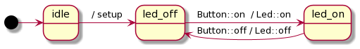

<!doctype html>
<html>
  <head>
    <meta charset="utf-8">
    <meta name="viewport" content="width=device-width, initial-scale=1.0, maximum-scale=1.0, user-scalable=no">

    <title>Online AVR/Arduino Development with C++20</title>

    <link rel="stylesheet" href="reveal.js/css/reveal.css">
    <link rel="stylesheet" href="reveal.js/css/theme/league.css" id="theme">
    <link rel="stylesheet" href="extensions/plugin/line-numbers/line-numbers.css">
    <link rel="stylesheet" href="extensions/css/highlight-styles/zenburn.css">
    <link rel="stylesheet" href="extensions/css/custom.css">

    <script>
      var link = document.createElement( 'link' );
      link.rel = 'stylesheet';
      link.type = 'text/css';
      link.href = window.location.search.match( /print-pdf/gi ) ? 'reveal.js/css/print/pdf.css' : 'reveal.js/css/print/paper.css';
      document.getElementsByTagName( 'head' )[0].appendChild( link );

      function set_address(self, remote, local) {
        if (window.location.search.match("local")) {
          self.href = local;
        } else {
          self.href = remote;
        }
      }
    </script>

    <meta name="description" content="Online AVR/Arduino Development with C++20">
    <meta name="author" content="Kris Jusiak">
    <meta name="apple-mobile-web-app-capable" content="yes">
    <meta name="apple-mobile-web-app-status-bar-style" content="black-translucent">
  </head>

  <body>
    <div class="reveal">
      <div class="slides">
          <section data-markdown=""
                   data-separator="^====+$"
                   data-separator-vertical="^----+$">
          <script type="text/template">
###### Meeting-Embedded 2020 / https://boost-ext.github.io/sml/meeting-embedded-2020

---

## Online AVR/Arduino Development with C++20

---

###### [kris@jusiak.net](mailto:kris@jusiak.net) | [@krisjusiak](https://twitter.com/krisjusiak) | [linkedin.com/in/kris-jusiak](https://www.linkedin.com/in/kris-jusiak)

==============================================================================

### Agenda

* #### Motivation/Goal
<!-- .element: class="fragment" data-fragment-index="1" -->
* #### Project
  <!-- .element: class="fragment" data-fragment-index="2" -->
  * #### Design
  <!-- .element: class="fragment" data-fragment-index="3" -->
  * #### Development
  <!-- .element: class="fragment" data-fragment-index="4" -->
  * #### Simulation
  <!-- .element: class="fragment" data-fragment-index="5" -->
  * #### Demo
  <!-- .element: class="fragment" data-fragment-index="6" -->
* #### Summary
<!-- .element: class="fragment" data-fragment-index="7" -->

---

##### <p align="left" style="background-color:darkblue">&nbsp;&nbsp;&nbsp;&nbsp;`darkblue background - something to remember ✓`</p>
<!-- .element: class="fragment" data-fragment-index="8" -->

==============================================================================

### Motivation/Goal

<a href="https://store.arduino.cc/usa/arduino-uno-rev3"></a>
<a href="https://www.microchip.com/wwwproducts/en/ATtiny85"></a>

#### Not easy to start with modern C++
<!-- .element: class="fragment" -->

  * #### [Arduino IDE](https://www.arduino.cc) - avr-gcc-7.3.0 / C++11
  <!-- .element: class="fragment" -->

  * #### Simulation online?
  <!-- .element: class="fragment" -->

----

### Goal

* #### Implement a simple project
<!-- .element: class="fragment" -->

  * #### Online (Design/Implementation/Testing/Simulation)
  <!-- .element: class="fragment" -->

  * ##### C++20
  <!-- .element: class="fragment" -->

  * #### Multiple architectures (Arduino Uno / Attiny85)
  <!-- .element: class="fragment" -->

==============================================================================

### Project - Switcher

---

#### Turn On/Off LED when Button pressed
<!-- .element: class="fragment" -->

----

### Design - https://bit.ly/320Cmdu

---

#### [Plant UML](https://plantuml.com)
<!-- .element: class="fragment" -->

```java
@startuml
  [*]     -> idle
  idle    -> led_off : / setup
  led_off -> led_on  : Button::on  / Led::on
  led_on  -> led_off : Button::off / Led::off
@enduml
```
<!-- .element: class="fragment" -->


<!-- .element: class="fragment" -->

----

### Development - https://godbolt.org

---

#### [Compiler Explorer](https://godbolt.org)
<!-- .element: class="fragment" -->

  * #### libraries/include `http`
  <!-- .element: class="fragment" -->

  * #### Different cross-compilers at once
  <!-- .element: class="fragment" -->

  * #### avr-gcc-9.2.0 / C++20
  <!-- .element: class="fragment" -->

  * #### gcc-trunk/clang-trunk
  <!-- .element: class="fragment" -->

----

### Implementation

----

#### State Machine Language (SML) - https://github.com/boost-ext/sml

---

* #### Single header / [sml.hpp](https://raw.githubusercontent.com/boost-ext/sml/master/include/boost/sml.hpp) / 2k LOC
<!-- .element: class="fragment" -->

* #### Neither Boost nor STL is required
<!-- .element: class="fragment" -->

* #### No 'virtual's (-fno-rtti)
<!-- .element: class="fragment" -->

* #### No exceptions required (-fno-exceptions)
<!-- .element: class="fragment" -->

* #### Supported compilers (C++14)
<!-- .element: class="fragment" -->

* #### [Clang-3.4+](https://travis-ci.org/boost-ext/sml), [XCode-6.1+](https://travis-ci.org/boost-ext/sml), [GCC-5.2+](https://travis-ci.org/boost-ext/sml), [MSVC-2015+](https://ci.appveyor.com/project/krzysztof-jusiak/sml)
<!-- .element: class="fragment" -->

----

#### SML - Domain Specific Language (DSL)


<!-- .element: class="fragment" -->

```cpp
* -> idle                 / setup    -> led_off
```
<!-- .element: class="fragment" -->

```cpp
     led_off : Button::on / Led::on  -> led_on
```
<!-- .element: class="fragment" -->

```cpp
     led_on : Button::off / Led::off -> led_off
```
<!-- .element: class="fragment" -->

---

```cpp
sm switcher = [] {
  return transition_table{
    *"idle"_s                          / setup     = "led off"_s,
     "led off"_s + event(TButton::on)  / TLed::on  = "led on"_s,
     "led on"_s  + event(TButton::off) / TLed::off = "led off"_s
  };
};
```
<!-- .element: class="fragment" -->

----

### Unit Testing: UT - https://github.com/boost-ext/ut

---

* #### C++20 ([GCC-9+, Clang-9.0+, Apple Clang-11.0.0+](https://travis-ci.org/boost-ext/ut), [MSVC-2019+*](https://ci.appveyor.com/project/boost-ext/ut))
<!-- .element: class="fragment" data-fragment-index="1" -->

* #### Single [header/module](https://github.com/boost-ext/ut/blob/master/include/boost/ut.hpp) (2k LOC) with no external dependencies
<!-- .element: class="fragment" data-fragment-index="2" -->

* #### Macro-free (✔️)
<!-- .element: class="fragment" data-fragment-index="3" -->

* #### Features ([Assertions](https://github.com/boost-ext/ut/tree/master/example/expect.cpp), [Suites](https://github.com/boost-ext/ut/tree/master/example/suite.cpp), [Tests](https://github.com/boost-ext/ut/tree/master/example/skip.cpp), [Sections](https://github.com/boost-ext/ut/tree/master/example/section.cpp), [BDD](https://github.com/boost-ext/ut/tree/master/example/BDD.cpp), [Matchers](https://github.com/boost-ext/ut/tree/master/example/matcher.cpp), [Logging](https://github.com/boost-ext/ut/tree/master/example/log.cpp), [...](https://github.com/boost-ext/ut/tree/master/example))
<!-- .element: class="fragment" data-fragment-index="4" -->

---

* #### (\*) Limitations may apply
<!-- .element: class="fragment" data-fragment-index="1" -->

* #### UT is not an official Boost library
<!-- .element: class="fragment" data-fragment-index="6" -->

----

#### Hello World - https://godbolt.org/z/Y43mXz

<a href="https://godbolt.org/z/Jqb5Ye"></a>

----

#### Concepts / C++20 / [C++draft/concepts](http://eel.is/c++draft/concepts)

---

* #### Type constraints (act like documentation for interfaces)
<!-- .element: class="fragment" data-fragment-index="1" -->

* #### Better error messages (Point of Instantiation (`POI`))
<!-- .element: class="fragment" data-fragment-index="2" -->

* #### Faster compilation times (in comparison to Substitution Failure is Not an Error (`SFINAE`))
<!-- .element: class="fragment" data-fragment-index="3" -->

<!-- .slide: data-background="darkblue" -->

----

#### Design By Introspection - https://d.godbolt.org/z/n8e4de

```cpp
constexpr auto foo(auto v) {
```
<!-- .element: class="fragment" data-fragment-index="1" -->

```cpp
  if constexpr (requires{ v.foo; }) {
    return v.foo;
  } else {
    return 0;
  }
```
<!-- .element: class="fragment" data-fragment-index="2" -->

```cpp
}
```
<!-- .element: class="fragment" data-fragment-index="1" -->

---

```cpp
constexpr struct { int foo{42}; } f;
static_assert(42 == foo(f));
```
<!-- .element: class="fragment" data-fragment-index="4" -->

```cpp
constexpr struct { int bar{42}; } b;
static_assert(0 == foo(b));
```
<!-- .element: class="fragment" data-fragment-index="5" -->

---

##### "Design by Introspection - Andrei Alexandrescu" - https://www.youtube.com/watch?v=HdzwvY8Mo-w
<!-- .element: class="fragment" data-fragment-index="6" -->

<!-- .slide: data-background="darkblue" -->

----

#### Immediately-invoked function expression (`IIFE`)

```cpp
template<auto N>
constexpr auto iife = []<auto... Ns>(std::index_sequence<Ns...>) {
  return (Ns + ...);
}(std::make_index_sequence<N>{});
```
<!-- .element: class="fragment" -->

---

```cpp
static_assert(0 == iife<0>);
static_assert(0 + 1 + 2 == iife<3>);
```
<!-- .element: class="fragment" -->

<!-- .slide: data-background="darkblue" -->

----

```cpp
template<component TButton, component TLed> struct switcher;
```

```cpp
  constexpr switcher() {
    const auto setup = [this] { 
      []<class... Ts>(switcher<Ts...>) { (Ts::setup(), ...); }(*this); 
    };
  }
```

```cpp
  constexpr switcher() {
    const auto setup = [this] { 
      []<class... Ts>(switcher<Ts...>) { (
        ([] {
          if constexpr requires{ Ts::setup(); } {
            Ts::setup();
          }
        }(), ...);
      }(*this); 
    };
  }
```

----

```cpp
template<class T>
concept component = requires {
  T::setup();
  T::on();
  T::off();
};
```

```cpp
template<auto Pin>
struct led final {
  static constexpr auto setup = [] { pinMode(uint8_t(Pin), OUTPUT); };
  static constexpr auto on    = [] { digitalWrite(uint8_t(Pin), HIGH); }; 
  static constexpr auto off   = [] { digitalWrite(uint8_t(Pin), LOW); }; 
};
```

```cpp
template<auto Pin>
struct button final {
  static constexpr auto setup = [] { pinMode(uint8_t(Pin), INPUT); };
  static constexpr auto on    = [] { return digitalRead(uint8_t(Pin)) == HIGH; }; 
  static constexpr auto off   = [] { return digitalRead(uint8_t(Pin)) == LOW; }; 
};
```

----

```cpp
int main() {
```

```cpp
  using switcher_t = sm<switcher<
    #if defined (__AVR_ATtiny85__)
      button<PB1>, led<PB0>
    #elif defined (__AVR_ATmega328__)
      button<2>, led<11>
    #endif
  >>;
```

```cpp
  for (switcher_t sm;;) {
    [&sm]<template<class...> class TList, class... TEvents>(TList<TEvents...>) {
      ([&sm](const auto& event) {
        if (event()) { sm.process_event(event); }
      }(TEvents{}), ...);
    }(decltype(sm)::events{});
  }
```

```cpp
}
```

----

```cpp
int main() {
```

```cpp
  "switcher"_test = [] {
    using button_t = button<0>;
    using led_t = led<1>;

    sm<switcher<button_t, led_t>> sm{};
```

```cpp
    should("start with led off") = [sm] {
      expect(sm.is("led off"_s));
    };
```

```cpp
    should("switch the led when button is pressed") = [sm] {
      mut(sm).process_event(button_t::on);
      expect(sm.is("led on"_s));

      mut(sm).process_event(button_t::off);
      expect(sm.is("led off"_s));
    };
```

```cpp
  };
```

```cpp
}
```

----

```cpp
void setup(){} // Arudino's setup
```

```cpp
void loop() { // Arduino's hot loop
```

```cpp
  asm(R"(

    ... // ASM output from Compiler Explorer

  )");
```

```cpp
}
```

----

### Assembly - atmega328 / attiny85

<a href=""></a>

----

### Simulation - https://www.tinkercad.com

<a href="https://www.tinkercad.com/things/9epUrFrzKP3"></a>
<a href="https://www.tinkercad.com/things/8QZMtpXRpvn"></a>

----

## Demo

---

#### Design - https://bit.ly/320Cmdu

#### Implementation - https://godbolt.org/z/ccMvn6

#### Simulation
* #### atmega328 - https://www.tinkercad.com/things/9epUrFrzKP3

* #### attiny85 - https://www.tinkercad.com/things/8QZMtpXRpvn

==============================================================================

## Summary

* #### Online development with AVR and C++20 is possible
<!-- .element: class="fragment" -->

* #### Compiler explorer is a great for experimenting - Cross-compiling with different compilers at the same time
<!-- .element: class="fragment" -->

* #### C++20 makes the code expressive - concepts, design by introspection, IIFE
<!-- .element: class="fragment" -->

* #### State Machine (SML) - Easy to express the flow (optimized)
<!-- .element: class="fragment" -->

* #### Unit Testing (UT) - Macro free
<!-- .element: class="fragment" -->

==============================================================================

### Let's embed all the things with C++20!

| | |
| ------- | ------------- |
| Slides | http://boost-ext.github.io/sml/meeting-embedded-2020 |
| | |
| Design   | https://github.com/ybainier/Hypodermic       |
| Implementation   | https://godbolt.org/z/bcsrYd |
| Simulation   |  |

#### [kris@jusiak.net](mailto:kris@jusiak.net) | [@krisjusiak](https://twitter.com/krisjusiak) | [linkedin.com/in/kris-jusiak](https://www.linkedin.com/in/kris-jusiak)
          </script>
        </section>

      </div>
    </div>

    <script src="reveal.js/lib/js/head.min.js"></script>
    <script src="reveal.js/js/reveal.js"></script>

    <script>

      // Full list of configuration options available at:
      // https://github.com/hakimel/reveal.js#configuration
      Reveal.initialize({

        // Display controls in the bottom right corner
        controls: false,

        // Display a presentation progress bar
        progress: false,

        // Display the page number of the current slide
        slideNumber: 'c/t',

        // Push each slide change to the browser history
        history: true,

        // Enable keyboard shortcuts for navigation
        keyboard: true,

        // Enable the slide overview mode
        overview: false,

        // Vertical centering of slides
        center: true,

        // Enables touch navigation on devices with touch input
        touch: true,

        // Loop the presentation
        loop: false,

        // Change the presentation direction to be RTL
        rtl: false,

        // Turns fragments on and off globally
        fragments: true,

        // Flags if the presentation is running in an embedded mode,
        // i.e. contained within a limited portion of the screen
        embedded: false,

        // Flags if we should show a help overlay when the questionmark
        // key is pressed
        help: true,

        // Flags if speaker notes should be visible to all viewers
        showNotes: false,

        // Number of milliseconds between automatically proceeding to the
        // next slide, disabled when set to 0, this value can be overwritten
        // by using a data-autoslide attribute on your slides
        autoSlide: 0,

        // Stop auto-sliding after user input
        autoSlideStoppable: true,

        // Enable slide navigation via mouse wheel
        mouseWheel: false,

        // Hides the address bar on mobile devices
        hideAddressBar: true,

        // Opens links in an iframe preview overlay
        previewLinks: false,

        // Transition style
        transition: 'convex', // none/fade/slide/convex/concave/zoom

        // Transition speed
        transitionSpeed: 'default', // default/fast/slow

        // Transition style for full page slide backgrounds
        backgroundTransition: 'default', // none/fade/slide/convex/concave/zoom

        // Number of slides away from the current that are visible
        viewDistance: 3,

        // Parallax background image
        parallaxBackgroundImage: '', // e.g. "'https://s3.amazonaws.com/hakim-static/reveal-js/reveal-parallax-1.jpg'"

        // Parallax background size
        parallaxBackgroundSize: '', // CSS syntax, e.g. "2100px 900px"

        // Number of pixels to move the parallax background per slide
        // - Calculated automatically unless specified
        // - Set to 0 to disable movement along an axis
        parallaxBackgroundHorizontal: null,
        parallaxBackgroundVertical: null,

        // Optional reveal.js plugins
        dependencies: [
          { src: 'reveal.js/lib/js/classList.js', condition: function() { return !document.body.classList; } },
          { src: 'reveal.js/plugin/markdown/marked.js', condition: function() { return !!document.querySelector( '[data-markdown]' ); } },
          { src: 'reveal.js/plugin/markdown/markdown.js', condition: function() { return !!document.querySelector( '[data-markdown]' ); } },
          { src: 'reveal.js/plugin/highlight/highlight.js', async: true, callback: function() { hljs.initHighlightingOnLoad(); } },
          { src: 'reveal.js/plugin/zoom-js/zoom.js', async: true },
          { src: 'reveal.js/plugin/notes/notes.js', async: true },
          { src: 'extensions/plugin/line-numbers/line-numbers.js' }
        ]
      });

      <!--window.addEventListener("mousedown", handleClick, false);-->
      <!--window.addEventListener("contextmenu", function(e) { e.preventDefault(); }, false);-->

      function handleClick(e) {
        if (1 >= outerHeight - innerHeight) {
          document.querySelector( '.reveal' ).style.cursor = 'none';
        } else {
          document.querySelector( '.reveal' ).style.cursor = '';
        }

        e.preventDefault();
        if(e.button === 0) Reveal.next();
        if(e.button === 2) Reveal.prev();
      }
    </script>

  </body>
</html>
